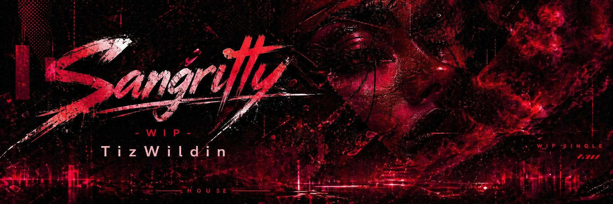
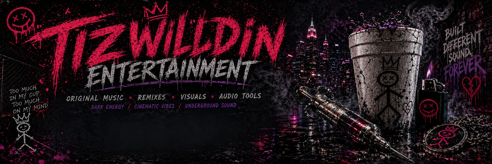

Tizwildin Entertainment Waveform Banner
SoundCloud waveform banner / release promo asset.
TizWildin / GareBearProductionz official release vault for monetized SoundCloud tracks, distributed releases, SoundCloud waveform banners, YouTube/Facebook links, and the GitHub audio software ecosystem around FreeEQ8 and Voxel Audio.
Part of the TizWildin Plugin Ecosystem — 19 free audio plugins with a live update dashboard.
FreeEQ8 · XyloCore · Instrudio · Therum · BassMaid · SpaceMaid · GlueMaid · MixMaid · MultiMaid · MeterMaid · ChainMaid · PaintMask · WURP · AETHER · WhisperGate · RiftWave · FreeSampler · VF-PlexLab · PAP-Forge-Audio
🎧 SoundCloud · 🎵 Awesome Audio · ▶️ YouTube · 🌊 Voxel Audio · 📘 Facebook Page · 🗂️ Release Vault
This is the public catalog layer connecting the music side and developer side of the TizWildin ecosystem: SoundCloud monetization, distribution tracking, official banners, GitHub repos, YouTube visuals, Facebook updates, FreeEQ8, Voxel Audio, and open audio tools.
FreeEQ8 is the flagship proof piece of the TizWildin / GareBearProductionz audio ecosystem: a free, open-source, EQ8 / EQ Eight inspired parametric EQ plugin built for macOS, Linux, and Windows.
Most serious modern EQ workflows are split between expensive commercial tools and smaller free EQs that usually cover only part of the chain. FreeEQ8 is positioned differently: it is designed as a zero-cost, open-source EQ workflow that brings together the kind of features producers usually expect from paid plugins.
Typical advanced EQ tools can range from free/open-source options to paid plugins around €60 / $60+ for enhanced dynamic EQ packages, and up to roughly $179–$249+ for flagship commercial EQ workflows depending on product, store, sale, region, and currency.
FreeEQ8 is meant to make the high-value EQ workflow available as part of a free open-source ecosystem instead of locking the core idea behind a price wall.
TizWildinEntertainmentHUB connects the plugin ecosystem and live update dashboard. Voxel Audio turns the music into RGB waveform visualizers and exportable release visuals. The Release Vault connects monetized SoundCloud releases, distributed releases, banners, and public proof.
Voxel Audio is the visual/export layer for the TizWildin release loop. It turns tracks into artwork-bound RGB waveform videos, live preview renders, export-vault clips, SoundCloud/YouTube-style visualizers, and release promo assets.
The workflow shown in the current Voxel Audio screenshots is: detect playable audio files, bind artwork, preview the visualizer, record/export MP4, store the session export, and use the result for YouTube, Facebook, SoundCloud promotion, and the Release Vault.
After FreeEQ8, this vault routes to the free sample-pack side of the TizWildin ecosystem. These packs are listed through the Hub and act as producer-facing assets connected to the music, plugins, and visualizer pipeline.
| Pack | Lane | Description | Repo Link | Hub Link |
|---|---|---|---|---|
| TizWildin-Aurora | Synth melody / cinematic | 3-segment original synth melody pack with loops, stems, demo renders, and neon/cinematic phrasing. | Hub catalog / repo route | Hub |
| TizWildin-Obsidian | Dark cinematic | Dark cinematic sample pack with choir textures, menu loops, transitions, bass, atmosphere, drums, and electric-banjo extensions. | Hub catalog / repo route | Hub |
| TizWildin-Skyline | Synthwave / darkwave | 30 BPM-tagged synthwave and darkwave loops with generator snapshot and dark neon additions. | Hub catalog / repo route | Hub |
| TizWildin-Chroma | Game synthwave | Multi-segment game synthwave loop sample pack from TizWildin Entertainment. | Hub catalog / repo route | Hub |
| TizWildin-Chime | Chimes / neon synthwave | Multi-part 88 BPM chime collection spanning glass, void, halo, reed, and neon synthwave lanes. | Hub catalog / repo route | Hub |
| Free Violin Synth Sample Kit | Instrument sample kit | Physical-model violin sample kit rendered from the Instrudio violin instrument. | Instrudio repo | Hub |
| Free Dark Piano Sound Kit | Piano / cinematic | 88 piano notes A0–C8 plus dark/cinematic loops and MIDI. | Dedicated pack repo | Hub |
| Free 808 Producer Kit | 808 / bass | 94 hand-crafted 808 bass samples tuned to every chromatic key. | Dedicated pack repo | Hub |
| Free Riser Producer Kit | Transitions / FX | 115+ risers and 63 downlifters: noise, synth, drum, FX, and cinematic. | Dedicated pack repo | Hub |
| Phonk Producer Toolkit | Phonk / drift | Drift phonk starter kit with 808s, cowbells, drums, MIDI, textures, templates, GamePhonk, and Drift V3 expansions. | Dedicated pack repo | Hub |
| Free Future Bass Producer Kit | Future bass | Loops, fills, drums, bass, synths, pads, FX, seamless loops, and multi-genre future-bass production assets. | Dedicated pack repo | Hub |
Dedicated public GitHub repos are linked where available. Older named packs route through the Hub repo/catalog until a standalone repo URL is confirmed.
Individual YouTube visualizer links found for the TizWildin / Voxel Audio release lane. The full playlist remains the main YouTube route, while these direct links point to specific tracks.
Public Facebook page/video links found for the TizWildin release and Voxel Audio promo surface. More can be added as they are indexed or pasted in.
SoundCloud waveform banner / release promo asset.

SoundCloud waveform banner / release promo asset.

SoundCloud waveform banner / release promo asset.

SoundCloud waveform banner / release promo asset.

SoundCloud waveform banner / release promo asset.

SoundCloud waveform banner / release promo asset.

SoundCloud waveform banner / release promo asset.

SoundCloud waveform banner / release promo asset.

SoundCloud waveform banner / release promo asset.

SoundCloud waveform banner / release promo asset.

SoundCloud waveform banner / release promo asset.
The monetized release list now includes every known link per track: SoundCloud, banner, YouTube visualizer, Facebook post/video, and distributor/source links where available.
| Platform / Surface | Count Indexed |
|---|---|
| SoundCloud monetized / catalog rows | 63 |
| SoundCloud rows with direct URL | 12 |
| SoundCloud public source pages / playlists | 3 |
| YouTube individual links | 15 |
| Facebook public links | 21 |
| Distributed/submitted rows | 2 |
| Rows with extra cross-links | 16 |
| Sample packs indexed | 11 |
| Release | Status | SoundCloud | Banner | All Known Links |
|---|---|---|---|---|
| Rewind - WIP | Monetized | Pending | Pending | YouTube Facebook |
| FollowYou - WIP/Sample | Monetized | Pending | Pending | Pending |
| NextToYou - UnMastered/NonFinal | Monetized | Pending | Pending | Pending |
| FunkiBeat3 - WIP | Monetized | Pending | Pending | Pending |
| OddBalls - WIP/Sample | Monetized | Pending | Pending | Pending |
| KaZooie - UnMastered/NonFinal/Single | Monetized | Pending | Pending | Pending |
| BeatleJuice - WIP | Monetized | Pending | Pending | Pending |
| DuhDahDah - UnMastered/NonFinal | Monetized | Pending | Pending | Pending |
| Loaded - WIP | Monetized | Pending | Pending | Pending |
| Fallen - UnMastered/NonFinal | Monetized | Pending | Pending | YouTube Facebook |
| ThingsHappening | Monetized | Pending | Pending | Pending |
| PolyClone - ThingsHappening | Monetized | Pending | Pending | Pending |
| Wrong Turn - Python Music | Monetized | Pending | Pending | Pending |
| beautiful_violin_synth | Monetized | Pending | Pending | Pending |
| LanguageStep - WIP | Monetized | Pending | Pending | |
| !GraveRave! - UnMastered/NonFinal | Monetized | Pending | Pending | |
| BreakTime - UnMastered/NonFinal | Monetized | Pending | Pending | YouTube Facebook |
| ClockWork - UnMastered/NonFinal | Monetized | Pending | Pending | Pending |
| Slimer - UnMastered/NonFinal/Single | Monetized | Pending | Pending | Pending |
| Munk - WIP | Monetized | Pending | Pending | Pending |
| DeepHouse - WIP/Sample | Monetized | Pending | Pending | Pending |
| MrHawk - WIP | Monetized | Pending | Pending | Pending |
| Quirkin - UnMastered/NonFinal | Monetized | Pending | Pending | YouTube Facebook |
| Timothy - WIP | Monetized | Pending | Pending | Pending |
| Clacker - UnMastered/NonFinal | Monetized | Pending | Pending | Pending |
| Genie - 👾Mastered👾/NonFinal | Monetized | Pending | Pending | YouTube Facebook |
| Rewind VIP - UnMastered/NonFinal | Monetized | SoundCloud | Pending | SoundCloud YouTube Facebook |
| EDMSoloRiser - 👾Mastered👾/Sample | Monetized | Pending | Pending | Pending |
| Memoria - UnMastered/NonFinal | Monetized | Pending | Pending | Pending |
| Quake - UnMastered/NonFinal/Single | Monetized | Pending | Pending | Pending |
| Kauffee | Monetized | Pending | Pending | Pending |
| Golden_Night_Drive - WIP | Monetized | Pending | Pending | Pending |
| Numb - WIP | Monetized | Pending | Pending | Pending |
| Echoes - WIP/Sample/Loop | Monetized | SoundCloud | Pending | SoundCloud |
| big_room - Wraith's Revenge | Monetized | Pending | Pending | Pending |
| Tangerine - WIP/Sample/Loop | Monetized | Pending | Pending | Pending |
| OddBallz - WIP/Sample | Monetized | Pending | Pending | Pending |
| Stickz - WIP/Sample/Loop | Monetized | Pending | Pending | Pending |
| GMunnyMind - 👾Mastered👾 | Monetized | Pending | Pending | Pending |
| Zoop - 👾Mastered👾/NonFinal/WIP | Monetized | Pending | Pending | Pending |
| DirtyPop - WIP | Monetized | Pending | Pending | Pending |
| WraithEternally ep1 | Monetized | Pending | Pending | Pending |
| WraithRevenge | Monetized | Pending | Pending | Pending |
| Wraith Eternal - Avenge | Monetized | Pending | Pending | Pending |
| EternalStrum_V1 | Monetized | Pending | Pending | Pending |
| EternalStrum_V2 | Monetized | Pending | Pending | Pending |
| TizWildin - Aurora Theft - 96 BPM E Lydian | Monetized | Pending | Pending | Pending |
| Future Bass Dub Switch V1 - WIP | Monetized | Pending | Pending | Pending |
| TranDown - VIP | Monetized | Pending | Pending | Pending |
| TranDown Glitch Vinyl - WIP | Monetized | Pending | Pending | Pending |
| TranDown Xl - WIP | Monetized | Pending | Pending | Pending |
| Future Bass Dub Switch V2 | Monetized | Pending | Pending | Pending |
| Sparks In The Circuitry - Vol 1 | Monetized | Pending | Pending | Pending |
| Odyssey Of A Mother-Board | Monetized | SoundCloud | | SoundCloud Banner |
| Johnny X Gooch | Monetized | SoundCloud | | SoundCloud Banner |
| Dubbed Out Of Luck | Monetized | SoundCloud | Pending | SoundCloud |
| Needle In The Cup VIP | Monetized | SoundCloud | Pending | SoundCloud |
| LoveSick VIP Edit | Monetized | SoundCloud | | SoundCloud Banner YouTube |
| Melodic Drip | Monetized | SoundCloud | | SoundCloud Banner YouTube Facebook |
| SanGritty WIP | Monetized | SoundCloud | | SoundCloud Banner YouTube Facebook |
| Alien Ascension WIP | Monetized | SoundCloud | | SoundCloud Banner YouTube Facebook |
| Grave Rave Remix feat. TRNDSTR | Monetized | SoundCloud | | SoundCloud Banner Facebook |
| Awaken / Awake | Monetized | SoundCloud | | SoundCloud Banner YouTube Facebook |
| Release | Artist Persona | Status | Source | Banner |
|---|---|---|---|---|
| Johnny X Gooch | Johnny Gooch / TizWildin | Submitted / first distributed music-persona release; monetization notification shown on 30 Apr 2026 | Source | |
| Dubbed Out Of Luck | TizWildin | Distribution release rejected for monetization on 29–30 Apr 2026; keep in distributor tracker | Source | Pending |
| Repo | Role |
|---|---|
| FreeEQ8 | Flagship free/open-source EQ8-inspired parametric EQ plugin. |
| TizWildinEntertainmentHUB | Plugin ecosystem hub and live update dashboard. |
| Voxel Audio | Free RGB waveform visualizer and audio export tool. |
| awesome-audio-plugins-dev | Free awesome audio dev list and ecosystem visibility hub. |
| ARC-Core | Authority/receipts backbone and broader system architecture. |
{kind=link}
{kind=link}